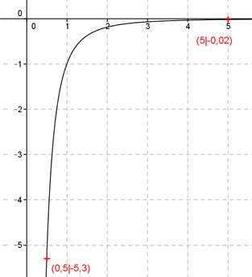

Aufgabe 66 Ergänzen Sie die Wertetabelle für den Graphen: y = -x-2,4 x 0,5 5 y -5,3 -0,02 1 f(0,5) = -0,5-2,4 = - -------- = - 5,3 gerundet 0,52,4 f(x) = -0,02 eingesetzt: -0,02 = -x-2,4 |*(-1) 0,02 = x-2,4 Logarithmieren: lg 0,02 = lg x-2,4 lg 0,02 = -2,4 * lg x lg 0,02 -1,699 lgx = ---------- = --------- = 0,708 --> -2,4 -2,4 x = 100,708 = 5 gerundet 